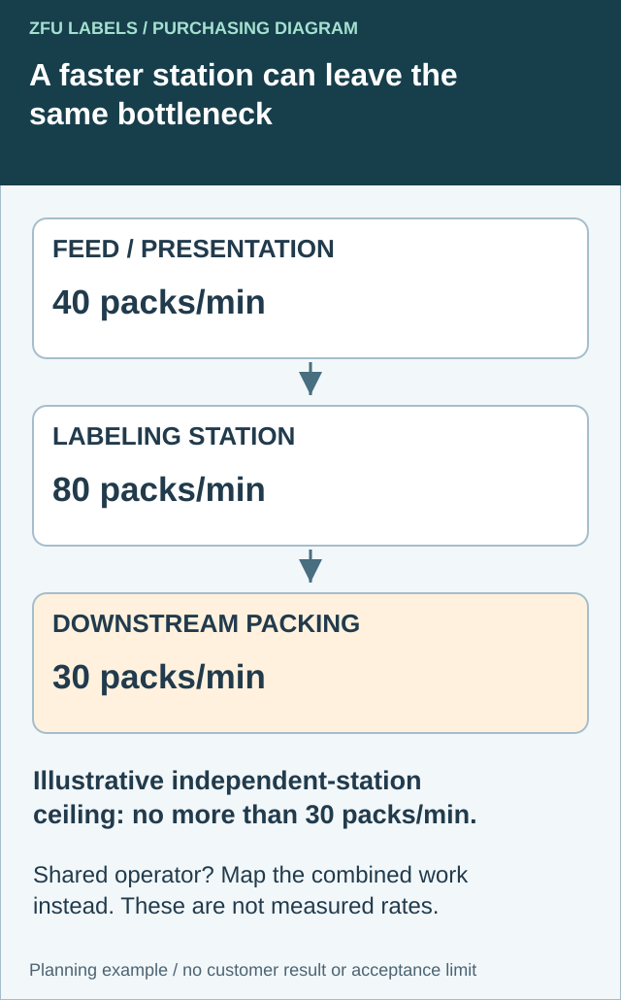

A label applicator may run faster while the finished packing task barely changes. Before buying one for its advertised speed, check who feeds it, who completes the next operation and whether the same person performs several jobs. Equipment compatibility remains necessary; it is separate from proving a useful improvement to the whole flow.
Write a container-and-job acceptance list before choosing equipment. This is the purchasing boundary of the trial, not a universal machine test or an instruction to alter equipment.

Ask which operation limits completed packs
Observe the real work around the proposed labeler. Include container presentation, label application, checks and the operation needed to deliver an accepted finished pack. Identify work waiting between stages. A machine's fastest isolated cycle does not establish the rate at which the staffed operation can complete the required output.


NIST's value-stream mapping overview recommends mapping material, process and information flow with the relevant functions. For this purchasing decision, use that principle to ask a narrower question: what changes outside the labeling station if its local cycle becomes shorter?
| Flow record | Observation to collect | Purchasing question |
|---|---|---|
| Supply/presentation | Actual containers available and feeding work | Can the proposed job be supplied continuously? |
| Labeling | Accepted output, stops and representative job | What result did the demonstration actually establish? |
| Downstream task | Checks, packing work and accumulation | Does completed output increase or merely the queue? |
| People | Which tasks share each operator | Are rates based on genuinely independent staffing? |
| Comparison boundary | Same task, duration and accepted-pack definition | Are additional labour or work-in-progress assumptions visible? |
The diagram uses hypothetical independent capacities of 40 packs/minute before labeling, 80 at labeling and 30 afterward. Even without interaction losses, that arrangement cannot sustain more than its 30-pack downstream capacity. It is an illustrative ceiling, not an observed line rate or equipment recommendation. Stops, quality losses and operating interactions may lower actual completed output.
That minimum-capacity shortcut is inappropriate when one person alternates between feeding, labeling and packing. Record the shared work and test the proposed staffing arrangement instead. Otherwise the same person's time is implicitly available in several places at once. Likewise, a short trial can temporarily use a prepared queue and conceal feeding work that must later be repeated.
Compare a balanced flow, a different work allocation and retaining a manual method where appropriate. Ask the equipment provider which fixtures, changes and safe trials support the real job. Record labour, space and inventory consequences using the business's own observations; do not assign a payback from the station illustration. Keep the existing container/job acceptance list below as a separate compatibility gate before any production decision.
AI-generated packaging planning example. Red Kestrel is a fictional brand; not a customer project, production test or usable retail artwork.
Identify the jobs the purchase must cover
Give the equipment supplier actual intended package samples and label requirements. Include filled or appropriately representative containers when mass, shape or handling changes the job. Do not assume a catalog capacity describes the relevant outside geometry.
| Acceptance row | Evidence to agree with the equipment supplier |
|---|---|
| Container identity | Actual supplier/design and relevant geometry |
| Filled state | Representative mass and handling arrangement |
| Label job | Size, shape, construction and front/back/wrap format |
| Roll interface | Confirmed direction, core, envelope, gap and liner format |
| Output requirement | Agreed placement/appearance and usable output basis |
| Changeover | Parts, setup, operator steps and evidence for the next job |
Mark which jobs are required at purchase and which are future possibilities. A sales claim about a diameter range does not automatically establish every combination of taper, label stiffness and filled-pack handling within that range.
Test the difficult relevant combination deliberately
Have the equipment supplier and site owner define representative cases and safe trial conditions. Record any grouping rationale. A small container with a tall label may answer a different question from the largest bottle with a short label; selecting only size extremes may leave a relevant combination unrepresented.
Evaluate accepted packs and the agreed placement criteria, including rework and interruptions. Keep a high headline rate separate from output the team can repeat under its normal job setup. Do not claim the short demonstration predicts a complete shift without evidence for that period and task.
Price the supported range and its limits
Ask whether the proposal includes fixtures, change parts, training, delivery and any necessary setup work. Confirm these from the equipment provider; this website does not sell or approve the depicted machine. A lower base price with unresolved job-specific tooling is an incomplete comparison.
If one low-volume container sits outside the demonstrated scope, compare keeping it manual rather than forcing every SKU onto the new machine. A mixed method can be reasonable when its responsibilities and quality checks are explicit.
Use the roll-versus-sheet task sheet for format handling, the unwind station record for orientation and the usable label-area guide for package fit. Resolve the physical label job before treating speed as the purchase decision.
Short answer
Hand labeling works for prototypes and controlled small runs. A positioning jig improves repeatability without changing the whole packing process. A manual or semi-automatic bottle label applicator becomes useful when straight placement, speed and operator consistency matter every week. Before ordering labels, confirm whether the equipment needs a specific roll direction, core size, roll diameter and label gap.
Hand labeling vs applicator: practical comparison
| Method | Best use | Main advantage | Watch for |
|---|---|---|---|
| Hand application | Samples, prototypes, photo shoots and occasional short runs. | Lowest setup effort and easy artwork changes. | Crooked labels, variable gaps and slower output as volume grows. |
| Positioning jig | Repeated hand labeling on one stable container. | Creates a consistent start point without a powered machine. | The jig must match the actual bottle, not only catalog dimensions. |
| Manual bottle applicator | Regular round-bottle runs with one operator. | Improves rotation and label alignment. | Container taper, label stiffness and roll winding compatibility. |
| Semi-automatic applicator | Frequent production where placement time and consistency affect throughput. | Faster repeatable placement with less operator variation. | Core size, unwind direction, sensor gap, maximum roll diameter and container range. |
When hand application is still the right choice
Stay with hand application when the design is still changing, each SKU has only a few units, containers vary in shape, or the labels are being used for samples rather than repeat production. A simple fixture can improve alignment: establish a fixed base, a side stop and a visible start line so every operator places the label from the same reference point.
Hand work is also easier when a package uses several separate labels, such as a front label, back label and lid seal. In that case, the real problem may be sequencing rather than speed. Grouping labels by SKU and applying them in the same order can reduce mismatches.
When to test a bottle label applicator
- Operators spend a meaningful part of every packing day aligning labels.
- Retail presentation suffers because front panels do not face the same direction.
- You are moving from sheets to roll labels for repeated production.
- Your co-packer or filling line has supplied equipment specifications.
- You need a consistent gap or overlap on wraparound labels.
An applicator does not correct an unsuitable label shape. A long rectangular label can still wrinkle on a tapered bottle, and a stiff label can still lift from a tight curve. Resolve package fit before using speed to multiply the problem.
Roll specifications to confirm before printing
- Winding direction: confirm which edge of the artwork leads off the roll and whether labels face in or out.
- Core diameter: match the cardboard or plastic core to the applicator holder.
- Maximum roll diameter: make sure the finished roll fits the machine safely.
- Web width and label gap: confirm the liner width and the gap the sensor needs to detect.
- Container range: test the smallest and largest actual bottles, including caps or shoulders that affect loading.
Use the label roll direction guide when discussing these details with a printer or equipment supplier.
A low-risk test before buying equipment
Ask for a small production roll using the intended label size, material, liner and winding direction. Run it on the exact filled or representative container. Record placement time, alignment variation, wrinkles, edge lift and changeover effort. This test is more useful than choosing equipment from a product photo because it exposes the interaction between the label, liner, bottle and operator.
What to send for an applicator-ready label quote
- Container photos and physical dimensions.
- Label width and height, plus front/back or wraparound format.
- Manual, dispenser, manual applicator or semi-automatic application method.
- Required roll direction, core size, roll diameter and gap if known.
- Quantity per SKU and number of artwork versions.
- Surface, storage and moisture conditions.
Send the relevant project details
Resolve the specific label handoff
Include container and label job, current work sequence, operator allocation, actual station observations and equipment-provider roll limits.
Prepare the label specification inquiry. The contact page opens an email draft for review; send files through the listed email or WhatsApp route. Actual supply scope, samples, pricing and timing require project confirmation.
Related decisions: Roll or Sheet Labels: Compare the Work Between Opening the Pack and Finishing the Job; Labels Sent to a Co-Packer: Separate Receipt from Production Release; Custom Label Lead Time: Ask Which Milestone Starts the Clock